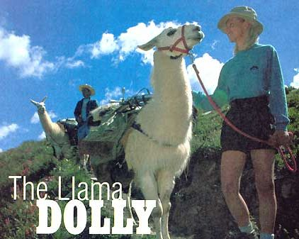
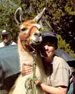
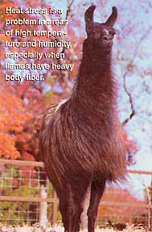
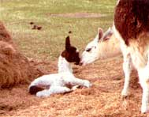

By Jon Geller, DVM
"My llama seems llistless ."
"What?" I responded.
"My llama seems listless."
"Oh, for a minute I thought you said your llama seemed listless." This strange exchange was on a par with other conversations I've had with llama owners over the years. This llama was owned by a wonderful woman named Lliane. Her name used to be Liane, but that was before she became a llama owner.
Lliane's llama Dolly had been off feed for several days and she'd not been showing her usual spunk. I peered into the strange beast's mouth, hoping to avoid being assaulted. Llamas spit. They also hum, orgle, snort, scream and cluck.
The "lama" family consists of llamas and alpacas, which are domesticated, and guanacos and vicunas, which are found in herds in the wilds of South America. Prehistoric fossils suggest they originated in North America, then migrated to their native lands of Bolivia, Chile and Peru, where they've been domesticated for about 4,000 years. They are modified ruminants called crias (Spanish for baby alpaca) and grow to an average of 300 to 400 pounds.
Here in the United States, llamas have enjoyed quite a surge in popularity for several reasons. The woolly beasts can be shorn every two years for their fiber, which varies in color from white to brown to black, and they make sturdy pack animals and guards. Cute as they are, many llamas serve no other purpose than to give their owners the pleasure of looking at them. (Incidentally, though most llama owners wouldn't consider it, roasted llama is quite tasty, as many South American herdsmen can attest.)
Contrary to what many llama owners believe, the fiber from llama shearing is not highly desirable because of its mixture of coarse guard hairs and fine underfiber. When painstaking efforts are made to separate and card shorn fiber, it can sell for at least $2 per ounce, depending on the color. Alpacas are far superior to llamas in the quality of their fiber, but they do not have the versatility of the llama to provide packing and guarding abilities.
Adult llamas can carry, or pack, up to one-third of their weight over rough terrain at high altitudes. Some enterprising wilderness enthusiasts have initiated successful outdoor adventure companies that feature pack trips with llamas. Llamas are also proving to be effective guards for herds of sheep, decreasing losses to predatory coyotes.
Llama owners can be as eccentric as their woolly pets. Often, after meeting folks that talk about such subjects such as UFO or Elvis sightings, I find out they own llamas.
Llamas are happiest grazing in green pastures, but in colder climes will accept confinement and quality grass hay. They are highly adaptive and will store excess nutrition for lean times. The core of their diet is grass hay, which should be 8 to 10 percent protein. Weanlings and pregnant or lactating mothers should receive protein supplementation, consisting of alfalfa hay or pellets. A salt/mineral supplement should be available, and in areas that are deficient in selenium, additional selenium (90ppm) and vitamin E (8000 units/lb) should be offered.
Other supplements should be avoided so that the llamas' innate ability to adapt to conditions will govern their body condition. Many llamas are overweight due to unnecessary supplementation.
Immunization is important for the prevention of intestinal toxemia, caused by the bacteria Clostridium perfingens C/D, and tetanus, caused by Clostridium tetani. Neonates can be vaccinated after one week, followed by two monthly boosters. Starting at one year of age, all llamas should be vaccinated annually with three ml of C/D tetanus toxoid, subcutaneously. This is usually a job for a veterinarian and can be clone along with a deworming injection during an annual exam.
Llamas are susceptible to a number of parasites, depending on the concentrations of animals in a given pasture, pasture rotation and cleanup procedures and the geographical area.
Most of the parasites that infect goats and sheep also affect llamas. The meningeal worm is a migrating parasite that is at risk to any llama living in areas inhabited by white tailed deer. Liver flukes are a problem in many areas of the country, and tapeworms are common in the llama droppings. Submit fecal samples to your veterinarian for analysis, then work together to tailor a parasite treatment plan for your herd.
Skin parasites such as ticks, lice and mites can go undetected under a llamas' long furry coat. In the Rocky Mountains, a certain type of tick can cause paralysis. Nasal bots can migrate around the upper nasal airways, sometimes causing long term nasal discharge.
Most llamas should be dewormed at least twice a year, more often in wetter locations. Your veterinarian should give an injection of ivermectin every fall, and an oral dose of fenbendazole deworming paste each spring. A pour-on ivermectin dewormer, applied to the animal's back, can also be used. Uncooperative, head-shy llamas can be given their deworming paste mixed into a bucket of grain. See the Preventive Health Program for Llamas for more specific information.
Llamas are generally low-maintenance, but they do require regular care. As mentioned earlier, the fighting teeth of male llamas should be cut off by 2 1/2 years of age, which is also the ideal time for castration. The surgery is similar to that done in the horse, using an injectable anesthetic. Toe nail trimming should be done at an early age to accustom the llama to the routine of lifting his or her foot cooperatively. Depending on the condition of the ground, trimming might have to be done every two to six months.
Llamas can breed successfully year-round, with a gestation period of 11 1/2 months. In temperate climates, it makes sense to breed in the spring or fall to avoid the temperature extremes of summer and winter. Breeding programs can range from pasture breeding to strictly managed hand breeding.
A female must be at least 12 months old and weigh 2/3 of her adult weight to be potentially breedable, though some will not breed successfully until they are older. Females can be rebred 14 days after they give birth, which will allow them to have a baby at about the same time every year. Ultrasound and rectal palpation provided by a veterinarian can help the serious llama breeder monitor pregnancy status and predict the ideal time for hand breeding.
Labor is usually quick in llamas, lasting less than one hour. Most crias are delivered during daylight hours, which is probably an evolutionary carryover from their life in the Andes where cold nighttime conditions are not conducive to newborn survival. The mother usually delivers the baby standing up, and the cria is delivered nose first and right side up. Difficulties are rare, but when they occur quick veterinary intervention is required.
Females can be rebred 14 days after they give birth, which will allow them to have a baby at about the same time every year.
Llama behavior is strongly influenced by herd social influences. Dominant llamas may bite at the ears and legs of subordinate herdmates, rendering them both head-shy and reluctant to have their legs touched. A gradual introduction of handling of the head, ears and legs with positive reinforcement will reward patient llama owners with a well-behaved pet or pack animal.
Spitting and body charging are unwelcome behaviors of dominant llamas, and owners must avoid overly close contact with these llamas when they are babies to avoid being treated as subordinates. Llamas may occasionally kick ,but it is generally a rare problem, and on average, most llamas raised and handled by their owners are well-behaved and pose a minimal safety risk.
"Beserk male syndrome" is an unpleasant but predictable result of bottle feeding a male cria. As the male approaches puberty, he may treat humans like other llamas, resorting to violent aggressive behavior.
Perceptive llama-watchers can read a llama's body language. Worried llamas have a worry line below their eye, caused by their lower eyelid pushing out. An upset llama will lay its ears back and raise its head. If direct eye contact is made at this point, prepare to dodge a waddle of well-directed spit. When llamas are being examined or worked on, they sometimes lie down as a refusal to cooperate.
Llamas are naturally hardy and healthy beasts. Well-cared-for animals often require only an annual veterinary visit for an exam, vaccinations, deworming, and cutting of wolf-teeth. Owners should be vigilant for signs of illness, however, and call their vet for timely intervention before a minor problem becomes a major one.
Most diseases, such as endotoxemia, tetanus and parasitism, can be prevented with good vaccination and parasite control programs. However, llamas are susceptible to several unusual diseases that owners should be aware of.
Heat stress is a problem in areas of high temperature and humidity, especially when llamas have heavy body fiber and are obese. If the combined numbers of the temperature and percentage of humidity exceed 150, llamas may suffer. If the total is greater than 180, the risk for heat stress is very high. Signs of heat stress include restlessness, lethargy, laying down for extended periods and possible seizures. Heat stress can be confirmed by a rectal body temperature reading greater than 105°F. Immediate steps must be taken to cool the llama, such as moving it into a cooler environment. Other cooling steps include spraying the llama down with cold water and administering cold water enemas and cooled IV fluids.
Luckily for veterinarians, most llamas are well-behaved and easy to treat. After I finished checking out Lliane's listless llama, who turned out to be fine, I couldn't resist throwing out a riddle: "Why do llamas hum?" Lliane, to her credit, didn't know the answer. "Because they don't know the words!" I chortled as I headed down the driveway, passing the llama-shaped mailbox, the yellow "Caution: llama crossing" warning, and the "Llama Lane" road sign.
For More Information
ORGANIZATIONS
International Llama Association, PO
Box 1891, Kalispell, MT 59903
LLama Association of North America,
1800 S. Oberchin Rd., Eagle Point,
OR 97534-9437
Rocky Mountain Llama and Alpaca
Association, 168 Emerald Mtn. Ct.,
Livermore, CO 80536
PUBLICATIONS
The Backcountry Llama, 2857 Rose
Valley Loop, Kelso, WA 98626
Llama Life II, 5232 Blenheim Rd.,
Charlottesville, VA 22902
Llamas, 46 Main St. Jackson, CA 95642
WEB SITES
Llamapaedia http://llamapaedia.com
Related info:
Preventive Health Program for Llamas
|
 An adorable, albeit eccentric, beast |
 |
 |
|
 |
|
|